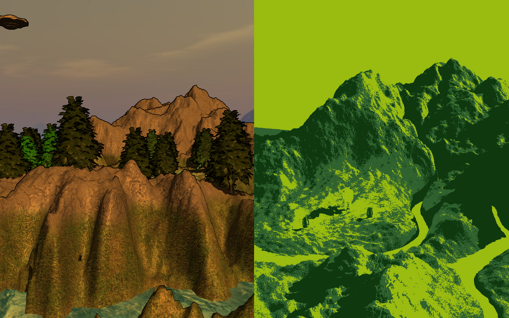
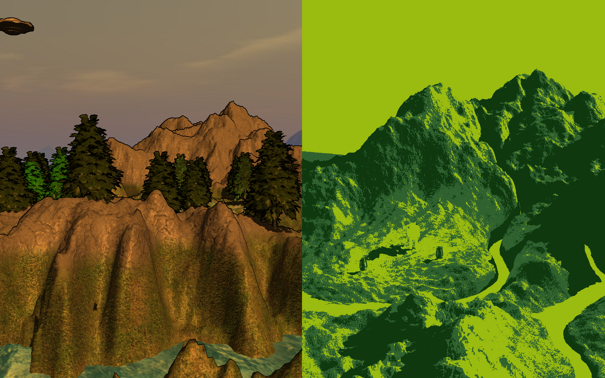

James Charsley
Changing Landscape
CSC8502-Advanced Graphics for Games (C++ / OpenGL) - Code Samples
Introduction
The second piece of coursework for the final year of my degree. The aim was to use C++ and OpenGL to render a landscape that changed over time. This was done using Newcastle University’s graphics framework, NCLGL, which was built upon throughout the module. I created a landscape that rose out of the water over time. The landscape featured multi-texturing and bump mapping for the heightmap, cube maps for the skybox and water reflections, as well as lighting and shadow mapping.
What I Learnt
Although I had done a previous graphics module, this coursework gave me a far deeper understanding of OpenGL and graphics programming. This was the largest OpenGL project I had done, and I was introduced to far more features. In particular, the importance of organising the scene using Scene Graphs, and using framebuffers to apply additional effects, such as Post Processing, Shadow Mapping and Deferred Rendering.
Video
 

Implementation
The Terrain
- A scene graph was used, with each node containing a mesh, transformation, shader, and a collection of child nodes.
- The terrain used a heightmap to populate an index buffered mesh.
- The water also used an index buffer, with a rolling sine wave to create waves.
- To create the rising effect, the heightmap shader and object positions were passed a factor between 0 and 1. This determined how much the heightmap had risen at each vertex.
Texturing and Cube Mapping
- Bump Maps were used to provide extra detail to the terrain.
- The terrain texuture was linearly interpolated between two textures/bump maps, based on the fragment height.
- Triplanar Texturing was used to prevent textures from stretching in steep areas of the terrain.
- Cube mapping was used for the skybox and the the reflections in the water.
Phong Lighting and Shadow Mapping
- The Phong Lighting Model was used for the lighting.
- A directional light without an origin was used for the main light, point lights for the lanterns, and a spotlight for the UFO.
- Dynamic Shadow mapping was then used to form the shadows of the objects onto the terrain.
Post Processing
Several post processing effects were added. This was done by renderering to a framebuffer, sampling it during post processing steps and the rendering to the screen using a quad.
Post processing effects included:- A general gaussian blur using ping pong processing.
- A modified version to create a depth of field effect by sampling the depth buffer.
- 2 versions of Sobel Edge Detection (black/white, and coloured).
- A Gameboy filter by setting the pixel to one of 4 colours based on the pixel's intensity.
A split screen was also added, with each sub-screen allowing its own post processing effect. This was done by rendering the scene twice (once from each camera’s perspective) and applying them as textures to quads at one of two positions on the screen.
Possible Improvements
- I would improve the quality of some of the code. As the coursework had a scrict deadline, there was little time to improve code after it was made functional, especially towards the end of coursework period.
- There were several features I would have liked to add if I had more time. These would include particle effects such as rain or snow, deferred rendering to allow more lights, and potentially trees and vegetation that dynamically grew over time.
- The camera in the project currently follows a path using linear interpolation, resulting in an angular path. I would instead like to replace this with a spline, such as Catmull rom, to allow smoother movement.
- I would like to expand the scene out, as it is currently limited to a small rectangular area.